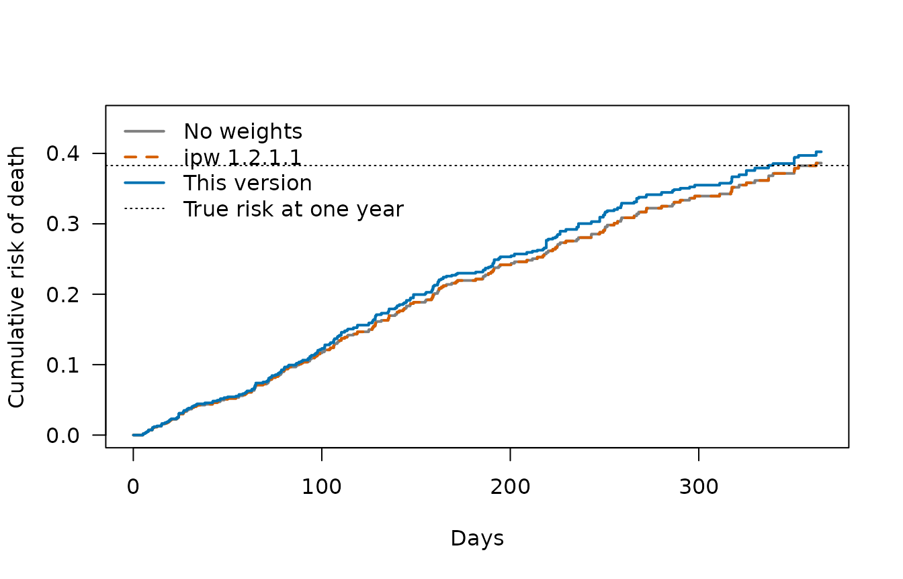

Survival weights and the time grid: a caution for ipw 1.3.2 and earlier
Source:vignettes/articles/survival-weights-time-grid.Rmd
survival-weights-time-grid.RmdSummary
In ipw 1.3.2 and earlier, ipwtm() with
family = "survival" and type = "first" (or
"cens" for censoring weights) gives correct weights
only when the data are on a full time grid: all
follow-up is split at all times that occur in the data, so that the rows
of all subjects start and end at the same time points. This is how the
data are prepared in the examples of the JSS paper (van der Wal and
Geskus, 2011), in haartdat and in Example 2 of
?ipwtm.
- Caution for older versions. If the rows of different subjects end at different times, for example one row per visit with each subject’s own visit dates, ipw 1.3.2 and earlier give incorrect weights. The probability of each row uses the increase in the baseline hazard since the previous time point in the whole data set, which is the start of the row only on a full grid. All 19 versions on CRAN, from ipw 1.0 (2011) to 1.3.2, behave the same way.
-
If you used an older version with data on the full grid,
your weights are correct. To be sure, check your data with
rows_affected()(section 5), or rerun the analysis with the updated ipw, which gives the same weights for such data (section 8). -
Improvement in this version. Each row now uses the
baseline hazard over its own interval
(tstart, timevar], so data with individual visit times can be used directly, without splitting them onto a grid. - With individual visit times the older versions’ weights can be far off: in the example in section 6 some differ from the correct ones by a factor of more than 30, and in a simulation with a known answer (section 7) ipw 1.2.1.1 gave the same biased estimate as using no weights at all, while the updated version gives the right answer.
1. Hazards in plain words
Hazard. The hazard is the risk that the event happens right now, for someone to whom it has not happened yet. Here the event is the start of treatment (or drop-out, for censoring weights). It is a rate, like a speed: a hazard of 0.01 per day means roughly a 1% chance of starting on the next day, for someone who has not started yet.
Cumulative hazard. The cumulative hazard is the hazard added up over time, as distance is speed added up over time. The risk built up over a stretch of time, for example from day 10 to day 20, is , and
so the probability of the event is one minus this. A small amount of hazard gives a probability close to 0, a large amount a probability close to 1.
Cox model. A Cox model splits the hazard of a person into two parts:
How the baseline hazard is estimated. The cumulative baseline hazard only goes up at the times when someone has the event. At such a time it goes up by
where “at risk” means followed at that time and not yet exposed.
(With several events at the same time, Efron’s method, which
coxph() uses, adjusts the denominator slightly.) One event
among people with a high total risk is not surprising, so the step is
small; one event among people with a low total risk is surprising, so
the step is large.
From hazard to weight. For one row of a patient
covering (tstart, timevar]: take the baseline hazard over
the row,
;
multiply by the patient’s
to get the patient’s hazard over the row; turn it into the probability
of what actually happened (exposure or no exposure); the weight is the
inverse of that probability, multiplied over the rows of the patient so
far. Section 4 does this step by step for three patients.
2. What the weights should be
For type = "first", each row of a subject covers an
interval (tstart, timevar] until the first exposure (for
example the start of a treatment). With a Cox model for the time to
exposure, the probability of no exposure during the row is
where
is the cumulative baseline hazard. The probability of exposure at the
end of the row is one minus this. The weight of a row is the product of
the inverse probabilities of the rows of that subject so far (and the
numerator model’s probabilities, for stabilised weights). Censoring
weights (type = "cens") use the probability of remaining
uncensored the same way.
3. What older versions computed, and why the full grid matters
Older versions computed the hazard of a row as
where is the time point just before among all times in the data, of any subject. When the data are on a full grid (every subject has rows at the same time points), is the start of the row, and the two are the same: the older versions are correct. When subjects have their own visit times, is usually later than , so part of the hazard during the row is left out: the probability of no exposure is too high and the probability of exposure too low. Weights of exposed rows come out too large, and weights of unexposed rows too small.
4. A worked example with three patients
d <- cases$tiny$data
d
#> id tstart time l a
#> 1 1 0 10 0.5 0
#> 2 1 10 20 1.2 1
#> 3 2 0 15 -0.3 1
#> 4 3 0 5 0.1 0
#> 5 3 5 20 0.8 0Patients 1 and 3 are at risk from day 10 and day 5 to day 20. Patient 2 is exposed at day 15 and patient 1 at day 20, so the baseline hazard increases at day 15 and at day 20. The times in the data are 5, 10, 15 and 20.
The Cox model and its cumulative baseline hazard. Here
is computed by hand from the risk sets (Efron’s method, as
coxph() uses), without basehaz() or
survfit():
fit <- coxph(Surv(tstart, time, a) ~ l, data = d, ties = "efron")
r <- exp(coef(fit) * d$l) # relative hazard of each row
# Efron cumulative baseline hazard from the risk sets
H_efron <- function(start, stop, event, r) {
et <- sort(unique(stop[event == 1]))
inc <- vapply(et, function(t) {
S0 <- sum(r[start < t & stop >= t]) # risk set at time t
D <- which(stop == t & event == 1) # events at time t
k <- length(D)
sum(1 / (S0 - (seq_len(k) - 1) / k * sum(r[D])))
}, numeric(1))
cum <- cumsum(inc)
function(t) vapply(t, function(s) {
j <- which(et <= s)
if (length(j)) cum[max(j)] else 0
}, numeric(1))
}
H0 <- H_efron(d$tstart, d$time, d$a, r)
H0(c(5, 10, 15, 20))
#> [1] 0.0000000 0.0000000 0.4903081 2.8137422Step by step
Relative risks. The Cox model gives
for l (higher l, lower risk; with three
patients this is just how the data fell), so each row has relative risk
:
| patient | row | l | r |
|---|---|---|---|
| 1 | (0, 10] | 0.5 | 0.453 |
| 1 | (10, 20] | 1.2 | 0.149 |
| 2 | (0, 15] | -0.3 | 1.609 |
| 3 | (0, 5] | 0.1 | 0.853 |
| 3 | (5, 20] | 0.8 | 0.281 |
The baseline hazard. It goes up only on day 15 (patient 2 is exposed) and day 20 (patient 1 is exposed):
- Day 15: at risk are the rows (10, 20], (0, 15], (5, 20] of patients 1, 2, 3. Step = 1 / (0.149 + 1.609 + 0.281) = 0.490.
- Day 20: patient 2 is no longer at risk; at risk are the rows (10, 20], (5, 20] of patients 1 and 3. Step = 1 / (0.149 + 0.281) = 2.323.
So is 0 up to day 15, 0.490 from day 15 and 2.814 from day 20, as computed above.
One row: patient 1 from day 10 to day 20, exposed at day 20.
- Baseline hazard over the row: = 2.814 − 0.000 = 2.814.
- Hazard of patient 1 over the row: × = 2.814 × 0.149 = 0.420.
- Probability of exposure in the row: = 0.343.
- Weight: the first row (day 0 to 10) has no hazard, so its probability of no exposure is 1; the weight is 1 / 0.343 = 2.918.
What the old versions did with the same row. In step 1 they did not use . The time just before day 20 among all times in the data is day 15 (the end of patient 2’s row), so they used = 2.814 − 0.490 = 2.323: the step of 0.490 on day 15 was left out, although patient 1 was followed on that day. Then the hazard is 0.347 instead of 0.420, the probability of exposure 0.293 instead of 0.343, and the weight 3.414 instead of 2.918. A hazard that is too small makes the probability of an exposure too small, so the weight of an exposed row too large; for an unexposed row it makes the probability of no exposure too large, so the weight too small.
All rows
For each row, the correct hazard uses tstart; the old
one used the previous time in the data:
times <- sort(unique(d$time))
t_prev <- c(NA, times)[match(d$time, times)]
hz_correct <- (H0(d$time) - H0(d$tstart)) * r
hz_old <- (H0(d$time) - ifelse(is.na(t_prev), 0, H0(t_prev))) * r
p_correct <- ifelse(d$a == 1, 1 - exp(-hz_correct), exp(-hz_correct))
p_old <- ifelse(d$a == 1, 1 - exp(-hz_old), exp(-hz_old))
w_correct <- ave(1 / p_correct, d$id, FUN = cumprod)
w_old <- ave(1 / p_old, d$id, FUN = cumprod)
tab <- data.frame(id = d$id, interval = paste0("(", d$tstart, ", ", d$time, "]"),
old_interval = paste0("(", ifelse(is.na(t_prev), "-", t_prev), ", ", d$time, "]"),
hazard_correct = hz_correct, hazard_old = hz_old,
weight_correct = w_correct, weight_old = w_old)
knitr::kable(tab, digits = 3)| id | interval | old_interval | hazard_correct | hazard_old | weight_correct | weight_old |
|---|---|---|---|---|---|---|
| 1 | (0, 10] | (5, 10] | 0.000 | 0.000 | 1.000 | 1.000 |
| 1 | (10, 20] | (15, 20] | 0.420 | 0.347 | 2.918 | 3.414 |
| 2 | (0, 15] | (10, 15] | 0.789 | 0.789 | 1.833 | 1.833 |
| 3 | (0, 5] | (-, 5] | 0.000 | 0.000 | 1.000 | 1.000 |
| 3 | (5, 20] | (15, 20] | 0.791 | 0.653 | 2.206 | 1.922 |
The rows (10, 20] of patient 1 and (5, 20]
of patient 3 were at risk at day 15, when patient 2 was exposed, but the
old calculation started counting at day 15 and missed that part of the
hazard. Patient 1, exposed at day 20, gets a weight of 3.414 instead of
2.918.
The same numbers from the package. Every old version gives the old weights, and this version gives the correct ones:
w_dev <- ipwtm(exposure = a, family = "survival", denominator = ~ l, id = id,
tstart = tstart, timevar = time, type = "first", data = d)$ipw.weights
data.frame(id = d$id, interval = tab$interval,
ipw_1.2.1.1 = old_res("1.2.1.1", "tiny")$weights,
ipw_1.3.2 = old_res("1.3.2", "tiny")$weights,
this_version = w_dev, by_hand = w_correct)
#> id interval ipw_1.2.1.1 ipw_1.3.2 this_version by_hand
#> 1 1 (0, 10] 1.000000 1.000000 1.000000 1.000000
#> 2 1 (10, 20] 3.414454 3.414454 2.917668 2.917668
#> 3 2 (0, 15] 1.832547 1.832547 1.832547 1.832547
#> 4 3 (0, 5] 1.000000 1.000000 1.000000 1.000000
#> 5 3 (5, 20] 1.922172 1.922172 2.206379 2.2063795. Were my data on the full grid?
For the older versions, what matters is whether each row that enters
the exposure (or censoring) model starts at the time point just before
its timevar among all times in the data. This function
counts the rows for which that is not the case; 0 means the
data are on the full grid and the older versions gave correct
weights:
rows_affected <- function(data, id, tstart, timevar, exposure) {
d <- data[order(data[[id]], data[[timevar]]), ]
in_model <- ave(d[[exposure]], d[[id]], FUN = function(z) cumsum(cumsum(z)) <= 1) == 1
times <- sort(unique(d[[timevar]]))
t_prev <- c(-Inf, times)[match(d[[timevar]], times)]
first_time <- d[[timevar]] == times[1]
sum(in_model & !first_time & d[[tstart]] != t_prev)
}
rows_affected(haartdat, "patient", "tstart", "fuptime", "haartind")
#> [1] 0
rows_affected(cases$own_first$data, "id", "tstart", "time", "a")
#> [1] 1022
nrow(cases$own_first$data)
#> [1] 1033haartdat is on the full grid: all patients have rows
every 100 days. In the data with individual visit times nearly every row
is off the grid. Run rows_affected() on the data you gave
to ipwtm(), with the names of your id, start time, end time
and exposure (or censoring) columns.
The examples of the JSS paper
The JSS paper’s example on tuberculosis and mortality (Section 4.3,
Example 2 of ?ipwtm) has CD4 measurements at irregular
times, a different schedule for each patient (timedat).
Those measurements are only used to fit a CD4 model. The data given to
ipwtm() are built on a full grid: every patient gets a row
at every TB time and every end of follow-up of all
patients.
data("basdat", package = "ipw")
data("timedat", package = "ipw")
# CD4 measurement times: each patient has their own
head(timedat$fuptime[timedat$id == 2], 6)
#> [1] 113 144 184 271 360 509
head(timedat$fuptime[timedat$id == 3], 6)
#> [1] 81 177 550 780 851 920
# the data for ipwtm(), as in Example 2 of ?ipwtm
times <- sort(unique(c(basdat$Ttb, basdat$Tend)))
startstop <- data.frame(id = rep(basdat$id, each = length(times)),
fuptime = rep(times, nrow(basdat)))
startstop <- merge(startstop, basdat, by = "id", all.x = TRUE)
startstop <- startstop[with(startstop, fuptime <= Tend), ]
startstop$tstart <- tstartfun(id, fuptime, startstop)
startstop$tb <- ifelse(with(startstop, !is.na(Ttb) & fuptime >= Ttb), 1, 0)
head(startstop[startstop$id == 2, c("id", "tstart", "fuptime", "tb")], 6)
#> id tstart fuptime tb
#> 443 2 -1 19 0
#> 444 2 19 56 0
#> 445 2 56 67 0
#> 446 2 67 93 0
#> 447 2 93 105 0
#> 448 2 105 116 0
head(startstop[startstop$id == 3, c("id", "tstart", "fuptime", "tb")], 6)
#> id tstart fuptime tb
#> 885 3 -1 19 0
#> 886 3 19 56 0
#> 887 3 56 67 0
#> 888 3 67 93 0
#> 889 3 93 105 0
#> 890 3 105 116 0
rows_affected(startstop, "id", "tstart", "fuptime", "tb")
#> [1] 0Patients 2 and 3 have identical rows, cut at other patients’ TB and end times, and no row is off the grid: the older versions give correct weights for this example. Had the rows instead been cut at each patient’s own CD4 measurement times, almost every row would have been off the grid:
visits <- merge(timedat[, c("id", "fuptime")], basdat[, c("id", "Ttb")], by = "id")
visits <- visits[order(visits$id, visits$fuptime), ]
visits$tstart <- tstartfun(id, fuptime, visits)
visits$tb <- ifelse(!is.na(visits$Ttb) & visits$fuptime >= visits$Ttb, 1, 0)
rows_affected(visits, "id", "tstart", "fuptime", "tb")
#> [1] 5831
nrow(visits)
#> [1] 62916. All versions from 1.0 to 1.3.2
The same cases were run in every version of ipw on CRAN (in separate
R sessions, with the script
data-raw/make-survival-time-grid-article-data.R) and
compared with the correct weights computed by hand as above:
-
haartdat: treatment weights
(
type = "first") and censoring weights (type = "cens") from the?ipwtmexample; on the full grid. -
own times: 300 subjects, each with their own visit
times, unstabilised (
numerator = NULL) and stabilised (numerator = ~ x), and censoring weights. -
own times on the full grid: the same data, with
every row split at all times in the data (as in Example 2 of
?ipwtm).
| Version | haartdat, first | haartdat, cens | own times, first | own times, first, stabilised | own times, cens | own times on the full grid |
|---|---|---|---|---|---|---|
| 1.0 | correct | no type = “cens” | incorrect (36) | incorrect (2.3) | no type = “cens” | correct |
| 1.0-1 | correct | no type = “cens” | incorrect (36) | incorrect (2.3) | no type = “cens” | correct |
| 1.0-2 | correct | no type = “cens” | incorrect (36) | incorrect (2.3) | no type = “cens” | correct |
| 1.0-3 | correct | no type = “cens” | incorrect (36) | incorrect (2.3) | no type = “cens” | correct |
| 1.0-4 | correct | no type = “cens” | incorrect (36) | incorrect (2.3) | no type = “cens” | correct |
| 1.0-5 | correct | no type = “cens” | incorrect (36) | incorrect (2.3) | no type = “cens” | correct |
| 1.0-6 | correct | no type = “cens” | incorrect (36) | incorrect (2.3) | no type = “cens” | correct |
| 1.0-7 | correct | no type = “cens” | incorrect (36) | incorrect (2.3) | no type = “cens” | correct |
| 1.0-8 | correct | no type = “cens” | incorrect (36) | incorrect (2.3) | no type = “cens” | correct |
| 1.0-9 | correct | no type = “cens” | incorrect (36) | incorrect (2.3) | no type = “cens” | correct |
| 1.0-10 | correct | no type = “cens” | incorrect (36) | incorrect (2.3) | no type = “cens” | correct |
| 1.0-11 | correct | no type = “cens” | incorrect (36) | incorrect (2.3) | no type = “cens” | correct |
| 1.2 | correct | correct | incorrect (36) | incorrect (2.3) | incorrect (0.38) | correct |
| 1.2.1 | correct | correct | incorrect (36) | incorrect (2.3) | incorrect (0.38) | correct |
| 1.2.1.1 | correct | correct | incorrect (36) | incorrect (2.3) | incorrect (0.38) | correct |
| 1.2.2 | correct | correct | incorrect (36) | incorrect (2.3) | incorrect (0.38) | correct |
| 1.3.0 | correct | correct | incorrect (36) | incorrect (2.3) | incorrect (0.38) | correct |
| 1.3.1 | correct | correct | incorrect (36) | incorrect (2.3) | incorrect (0.38) | correct |
| 1.3.2 | correct | correct | incorrect (36) | incorrect (2.3) | incorrect (0.38) | correct |
| this version (1.4.0) | correct | correct | correct | correct | correct | correct |
The numbers in brackets are the largest relative difference between a
version’s weights and the correct weights (2 means one weight is three
times too large or too small). Versions 1.0 to 1.0-11 had no
type = "cens".
All versions are correct for the data on the full grid
(haartdat, and the visit-time data after splitting onto the
full grid), and all 19 versions give the same weights as ipw 1.0 for the
data with individual visit times, to 1e-10: the calculation was the same
from the first release, and the rewrite in 1.3 kept it.
How far off are the older versions’ weights for the data with individual visit times? For the unstabilised weights:
old_w <- old_res("1.3.2", "own_first")$weights
summary(old_w / refs$own_first)
#> Min. 1st Qu. Median Mean 3rd Qu. Max.
#> 0.1055 0.5921 0.8098 1.7893 0.9941 37.3452
c(largest_weight_old = max(old_w), largest_weight_correct = max(refs$own_first))
#> largest_weight_old largest_weight_correct
#> 245.2007 117.27147. What it does to an estimate: a simulation
This simulation has a known answer. It shows what happens to an estimate when data with individual visit times, not split onto the full grid, are used with an older version, and that the updated version handles such data directly.
The question. What is the risk of death within one
year if nobody started treatment? In the data, patients start
treatment during follow-up, and their follow-up is stopped (censored) at
that moment. Censoring weights from ipwtm()
(type = "cens") make the patients who are still untreated
stand in for those who started, and a weighted Kaplan-Meier estimate
gives the risk.
The data. 1000 patients per data set, followed for one year.
- Each patient has their own visit times. At each
visit a covariate
l(think of a marker of disease severity) is measured; it changes from visit to visit and stays fixed between visits. - Patients with a higher
lare more likely to start treatment (hazard ratio 2.2 per unit ofl) and more likely to die (hazard ratio 2.2 per unit). - So the patients who stay untreated are the healthier ones, and simply censoring at treatment start without weights gives a risk that is too low.
- Treatment start and death happen at exact times between visits, so
the Cox model that
ipwtm()fits for treatment start (~ l) is correct. - The true risk without treatment is computed by simulating 400,000 patients from the same process with treatment start switched off.
The code that makes the data and runs the analysis is in
data-raw/make-survival-time-grid-simulation.R. Each data
set is analysed like this:
w <- ipwtm(exposure = start_trt, family = "survival", denominator = ~ l,
id = id, tstart = tstart, timevar = time, type = "cens", data = d)
fit <- survfit(Surv(tstart, time, death) ~ 1, data = d, weights = w$ipw.weights)
1 - summary(fit, times = 365)$surv # estimated 1-year riskThere are 500 data sets in each of two scenarios: visits 3 to 20 days apart, and visits 1 to 5 days apart. The same data sets are analysed with ipw 1.2.1.1 and with this version.
| Visits | True 1-year risk without treatment | Rows per data set (average) |
|---|---|---|
| 3 to 20 days apart | 38.28% | 15461 |
| 1 to 5 days apart | 39.02% | 54654 |
| Visits | Method | Mean estimate | Bias | MCSE | Empirical SD |
|---|---|---|---|---|---|
| 3 to 20 days apart | No weights | 35.1% | -3.1% | 0.10% | 2.3% |
| 3 to 20 days apart | Weights from ipw 1.2.1.1 | 35.1% | -3.1% | 0.10% | 2.3% |
| 3 to 20 days apart | Weights from this version (1.3.2.9000) | 37.5% | -0.8% | 0.12% | 2.7% |
| 1 to 5 days apart | No weights | 38.0% | -1.0% | 0.11% | 2.4% |
| 1 to 5 days apart | Weights from ipw 1.2.1.1 | 38.0% | -1.0% | 0.11% | 2.4% |
| 1 to 5 days apart | Weights from this version (1.3.2.9000) | 38.9% | -0.1% | 0.12% | 2.6% |
MCSE is the Monte Carlo standard error of the mean estimate: a bias smaller than about two MCSE is within simulation noise.
What the table shows.
- ipw 1.2.1.1 gives exactly the same answer as no weights. Its weights hardly differ from 1: on average the largest weight in a data set is 1.04, against 22.7 with the updated version. With exact event times, almost every row ends at its own time, and the “previous time in the data” that the old code used is a moment before the end of the row. The hazard over that moment is almost zero, so the probability of staying untreated is almost 1 and the weight almost 1. The old weights therefore did not correct for the confounding at all.
-
The updated version removes the bias. With visits 1
to 5 days apart its estimate is within simulation noise of the true
risk. With visits 3 to 20 days apart a small bias remains (-0.8
percentage points, against -3.1 for the old version). That is not
related to the time grid:
ipwtm()gives each row the weight at the end of the row, and uses it for the whole row. Within a long row the weight should grow gradually, so patients who are still followed early in the row get a slightly too large weight. This approximation is the same in every version, and it shrinks as rows get shorter, while the old version’s bias does not.
One data set. The cumulative risk of death in the first data set (visits 3 to 20 days apart), without weights, with the weights of ipw 1.2.1.1 (dashed), and with the weights of this version. The dotted line is the true risk at one year.

The curve with the old weights lies on top of the unweighted curve.
summary(sim$example$old_w) # ipw 1.2.1.1
#> Min. 1st Qu. Median Mean 3rd Qu. Max.
#> 1.000 1.000 1.000 1.000 1.000 1.033
summary(w_new) # this version
#> Min. 1st Qu. Median Mean 3rd Qu. Max.
#> 1.001 1.160 1.423 1.768 1.947 17.363
rows_affected(ex, "id", "tstart", "time", "start_trt")
#> [1] 15114
nrow(ex)
#> [1] 151188. If you used an older version
If your data were on the full grid, your weights are
correct. This is the case if all follow-up was split at all
times that occur in the data (for example, all event and end times of
all subjects), as in the examples of the JSS paper and Example 2 of
?ipwtm, or if all subjects simply have rows at the same
time points, as in haartdat. The last column of the table
in section 6 shows that every version gives correct weights for such
data.
To be sure, do one of these:
- Run
rows_affected()(section 5) on the data you gave toipwtm(). If it returns 0, the data were on the full grid and the weights were correct. - Rerun the analysis with the updated ipw. For data on the full grid it gives the same weights as the older versions; the package tests check this against stored results of ipw 1.2.1.1. If the weights differ, the data were not on the full grid, and the new weights are the correct ones.
If your data were not on the full grid, recompute the weights with the updated ipw, which handles individual visit times directly. With an older version you can get correct weights by first splitting every row at all times that occur in the data. For example:
split_full_grid <- function(d) {
grid <- sort(unique(c(d$tstart, d$time)))
do.call(rbind, lapply(seq_len(nrow(d)), function(r) {
cuts <- grid[grid > d$tstart[r] & grid < d$time[r]]
s <- c(d$tstart[r], cuts); e <- c(cuts, d$time[r]); k <- length(s)
data.frame(id = d$id[r], tstart = s, time = e, x = d$x[r], l = d$l[r],
a = c(rep(0, k - 1), d$a[r])) # exposure on the last piece only
}))
}Covariates keep the value of the original row on every piece, and the exposure (or censoring) event goes on the last piece only. The weight at the end of an original row is the weight on its last piece; it equals the weight that the updated version gives for the original row.
9. The code: before and after
The code below is taken from the source packages on CRAN (stored with
this article by
data-raw/make-survival-time-grid-article-data.R); line
numbers are those of R/ipwtm.R in each version. Only the
denominator model is shown; the numerator model had the same code.
ipw 1.0 (2011)
147 bh <- basehaz(mod2, centered = TRUE)
148 temp <- data.frame(timevar = sort(unique(tempdat$timevar)))
149 temp <- merge(temp, data.frame(timevar = bh$time, bashaz.cum.denominator = bh$hazard), by = "timevar", all.x = TRUE);rm(bh)
150 if (is.na(temp$bashaz.cum.denominator[temp$timevar == min(unique(tempdat$timevar))])) temp$bashaz.cum.denominator[temp$timevar == min(unique(tempdat$timevar))] <- 0
151 temp$bashaz.cum.denominator <- approx(x = temp$timevar, y = temp$bashaz.cum.denominator, xout = temp$timevar, method = "constant", rule = 2)$y
152 temp$bashaz.denominator[1] <- temp$bashaz.cum.denominator[1]
153 temp$bashaz.denominator[2:nrow(temp)] <- diff(temp$bashaz.cum.denominator, 1)
154 temp$bashaz.cum.denominator <- NULL
155 tempdat <- merge(tempdat, temp, by = "timevar", all.x = TRUE);rm(temp)
156 tempdat <- tempdat[order(tempdat$id, tempdat$timevar),]
157 tempdat$risk.denominator[tempdat$selvar == 1] <-predict(mod2, type="risk", centered = TRUE)
158 tempdat$hazard.denominator[tempdat$selvar == 1] <- with(tempdat[tempdat$selvar == 1,], bashaz.denominator*risk.denominator)
159 tempdat$p.denominator[with(tempdat, selvar == 1 & exposure == 0)] <- with(tempdat[with(tempdat, selvar == 1 & exposure == 0),], exp(-1*bashaz.denominator*risk.denominator))
160 tempdat$p.denominator[with(tempdat, selvar == 1 & exposure == 1)] <- 1 - with(tempdat[with(tempdat, selvar == 1 & exposure == 1),], exp(-1*bashaz.denominator*risk.denominator))
161 tempdat$p.denominator[tempdat$selvar == 0] <- 1
162 tempdat$w.denominator <- unsplit(sapply(split(tempdat$p.denominator, tempdat$id), function(x)cumprod(x)), tempdat$id)Line 148 makes a list of all distinct times in the
data (tempdat$timevar, the end times of all rows
of all subjects). Lines 152-153 take the increase of the cumulative
baseline hazard between neighbouring times in that list, and line 155
attaches it to each row by its end time. Lines 158-160 use that increase
as the hazard of the row. The start time of the row
(tstart) is not used at all.
ipw 1.2.1.1 (the last version before the rewrite)
186 bh <- basehaz(mod2, centered = TRUE)
187 temp <- data.frame(timevar = sort(unique(tempdat$timevar)))
188 temp <- merge(temp, data.frame(timevar = bh$time, bashaz.cum.denominator = bh$hazard), by = "timevar", all.x = TRUE);rm(bh)
189 if (is.na(temp$bashaz.cum.denominator[temp$timevar == min(unique(tempdat$timevar))])) temp$bashaz.cum.denominator[temp$timevar == min(unique(tempdat$timevar))] <- 0
190 temp$bashaz.cum.denominator <- approx(x = temp$timevar, y = temp$bashaz.cum.denominator, xout = temp$timevar, method = "constant", rule = 2)$y
191 temp$bashaz.denominator[1] <- temp$bashaz.cum.denominator[1]
192 temp$bashaz.denominator[2:nrow(temp)] <- diff(temp$bashaz.cum.denominator, 1)
193 temp$bashaz.cum.denominator <- NULL
194 tempdat <- merge(tempdat, temp, by = "timevar", all.x = TRUE);rm(temp)
195 tempdat <- tempdat[order(tempdat$id, tempdat$timevar),]
196 tempdat$risk.denominator[tempdat$selvar == 1] <-predict(mod2, type="risk", centered = TRUE)
197 tempdat$hazard.denominator[tempdat$selvar == 1] <- with(tempdat[tempdat$selvar == 1,], bashaz.denominator*risk.denominator)
198 tempdat$p.denominator[with(tempdat, selvar == 1 & exposure == 0)] <- with(tempdat[with(tempdat, selvar == 1 & exposure == 0),], exp(-1*bashaz.denominator*risk.denominator))
199 if(type == "first"){tempdat$p.denominator[with(tempdat, selvar == 1 & exposure == 1)] <- 1 - with(tempdat[with(tempdat, selvar == 1 & exposure == 1),], exp(-1*bashaz.denominator*risk.denominator))}
200 if(type == "cens"){tempdat$p.denominator[with(tempdat, selvar == 1 & exposure == 1)] <- with(tempdat[with(tempdat, selvar == 1 & exposure == 1),], exp(-1*bashaz.denominator*risk.denominator))}
201 tempdat$p.denominator[tempdat$selvar == 0] <- 1
202 tempdat$w.denominator <- unsplit(lapply(split(tempdat$p.denominator, tempdat$id), function(x)cumprod(x)), tempdat$id)The same calculation (lines 187, 191-192, 194, 197); only the
censoring weights (type = "cens", line 200) were added.
ipw 1.3.2 (CRAN, after the rewrite)
491 surv_lhs <- sprintf("survival::Surv(%s, %s, %s)", var_names$tstart, time_col, exp_col)
492 u_times <- sort(unique(data[[time_col]]))
493
494 .compute_surv_p <- function(mod) {
495 bh <- survival::basehaz(mod, centered = TRUE)
496 df_bh <- data.frame(timevar = u_times)
497 df_bh <- merge(df_bh, data.frame(timevar = bh$time, cum_haz = bh$hazard), by = "timevar", all.x = TRUE)
498
499 if (is.na(df_bh$cum_haz[1])) df_bh$cum_haz[1] <- 0
500 df_bh$cum_haz <- stats::approx(df_bh$timevar, df_bh$cum_haz, xout = df_bh$timevar, method = "constant", rule = 2)$y
501 df_bh$step_haz <- c(df_bh$cum_haz[1], diff(df_bh$cum_haz, 1))
502
503 merged <- merge(
504 data.frame(orig_seq = seq_len(nrow(data)), timevar = data[[time_col]]),
505 df_bh[, c("timevar", "step_haz")],
506 by = "timevar",
507 all.x = TRUE
508 )
509 merged <- merged[order(merged$orig_seq), ]
510
511 risk <- rep(NA_real_, nrow(data))
512 risk[data$selvar == 1] <- stats::predict(mod, type = "risk", centered = TRUE)
513 inst_haz <- merged$step_haz * riskThe rewrite kept the calculation: u_times is the list of
all distinct end times (line 492), step_haz the increase
between neighbouring times (line 501), merged onto the rows by their end
time and used as the hazard of the row (line 513).
This version
612 # Hazard over each row's own interval (tstart, timevar]: L0(timevar) - L0(tstart).
613 # (Up to ipw 1.3.x the increment between consecutive time points of the whole
614 # data set was used, which is only right when all subjects share one time grid.)
615 bh <- survival::basehaz(mod, centered = TRUE)
616 cum_haz_at <- function(t) {
617 out <- stats::approx(bh$time, bh$hazard, xout = t, method = "constant", rule = 2)$y
618 out[t < min(bh$time)] <- 0
619 out
620 }
621 risk <- rep(NA_real_, nrow(data))
622 risk[data$.ipw_selvar == 1] <- stats::predict(mod, type = "risk", centered = TRUE)
623 inst_haz <- (cum_haz_at(data[[time_col]]) - cum_haz_at(data[[start_col]])) * riskThe cumulative baseline hazard is now evaluated at both ends of each
row’s own interval, timevar and tstart, and
the difference is the hazard of the row. This is the calculation that
type = "all" (new in this version) already used. For data
on the full grid the weights are unchanged; the package tests check this
against the stored results of ipw 1.2.1.1 for haartdat and
other data.
Tests
The package tests compare the weights with a baseline hazard computed
by hand from the risk sets, as in section 4, for
type = "first" and type = "cens", on data with
individual visit times, with tied times and with follow-up starting
below 0, with the rows in random order. This is the test (from
tests/testthat/test-audit2-ipwtm.R; the helper functions
r2_H0(), r2_surv_ref() and
r2_irregular() are defined at the top of that file):
r2_H0 <- function(start, stop, event, r) {
et <- sort(unique(stop[event == 1]))
inc <- vapply(et, function(t) {
S0 <- sum(r[start < t & stop >= t]); D <- which(stop == t & event == 1)
d <- length(D); sum(1 / (S0 - (0:(d - 1)) / d * sum(r[D])))
}, numeric(1))
cum <- cumsum(inc)
function(t) vapply(t, function(s) { k <- which(et <= s); if (length(k)) cum[max(k)] else 0 }, numeric(1))
}
# By-hand stabilised weights (numerator ~ x, denominator ~ x + l), data sorted by id, time
...
test_that("survival first/cens equal an independent by-hand Efron interval hazard", {
sets <- list(irregular = r2_irregular(120, 1), ties = r2_irregular(120, 2, ties = TRUE),
negative_start = r2_irregular(120, 3, start0 = -5))
for (nm in names(sets)) for (tp in c("first", "cens")) {
d <- sets[[nm]]
d <- d[sample(nrow(d)), ] # unsorted input
e <- if (tp == "first") "a" else "cens"
ref <- r2_surv_ref(d, e, tp)
w <- r2_surv_w(d, e, tp)[match(ref$key, paste(d$id, d$time))]
expect_equal(w, unname(ref$w), tolerance = 1e-10, label = paste(nm, tp))
}
})For data with individual visit times, the same comparison fails for
every version up to 1.3.2, as section 6 shows. Another test checks that
type = "first" and type = "all" agree when
every subject is exposed at most once
(tests/testthat/test-audit-ipwtm.R). The tests run on
Linux, macOS and Windows with every change to the package.